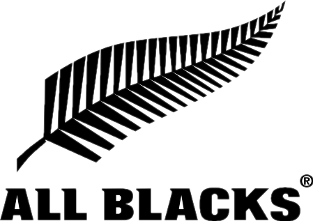
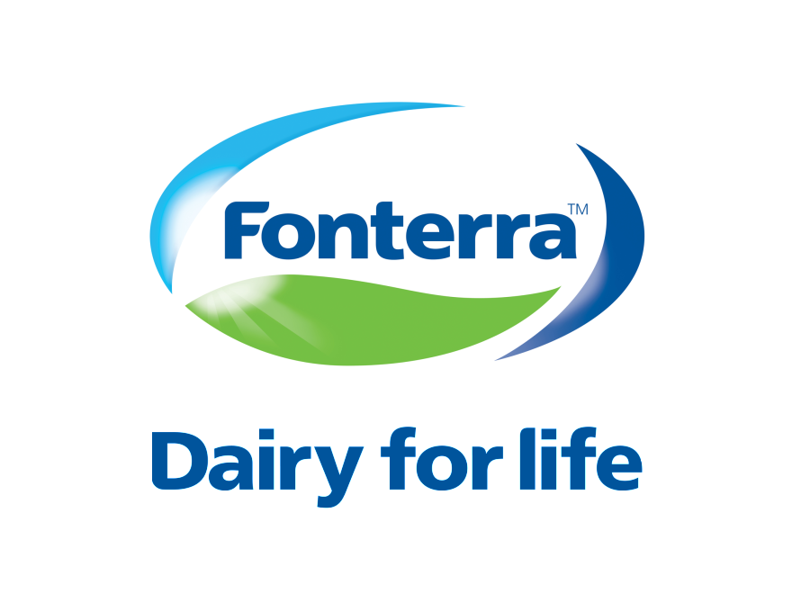

"Sign-The-Sky enabled us to get the most reach ever for our advertisements! Over 30,000 people saw our competition and it showed in our analytics."

"We used Sign-The-Sky for the rugby world cup and were completely blown away! Everyone was talking about the amazing imagery in the sky and how it was flying!? It created so much hype and we were so happy with the result! Great service also! "

We absolutely loved working with Sign-The-Sky! It's such a great idea and I generally think that advertising is moving this way. So we were so glad we got on board early. We were able to show how our farmers work and really set a great visual of what we do. Really happy with how it all worked out.
We used sign the sky when the earth quake happened in Wellington 3 months ago. It was the only way we could evacuate people in the city to the right area. It made the most dramatic difference and we were so glad we could rely on Sign-The-Sky to showcase the right information to the New Zealand community. It was truely amazing and we will be using this system for all emergency's from now on.